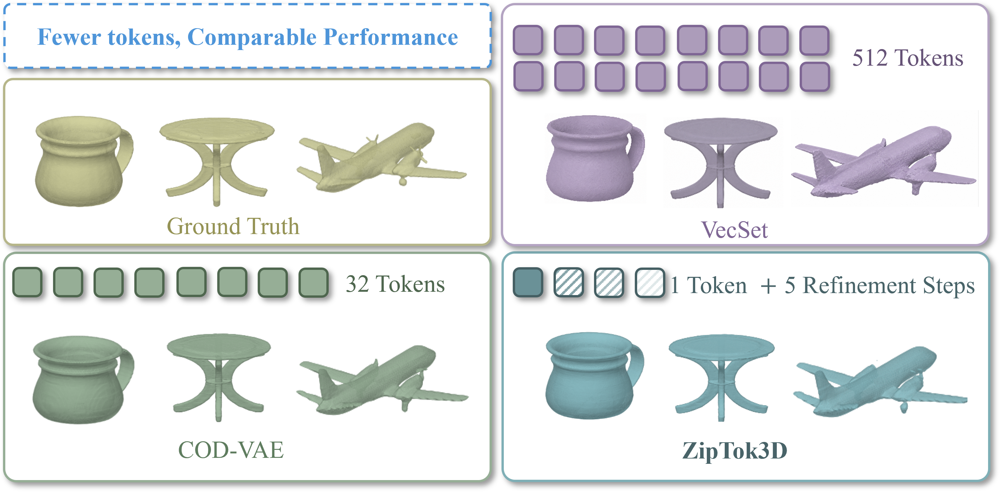
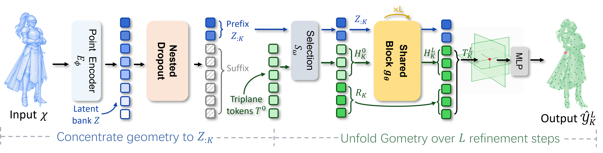
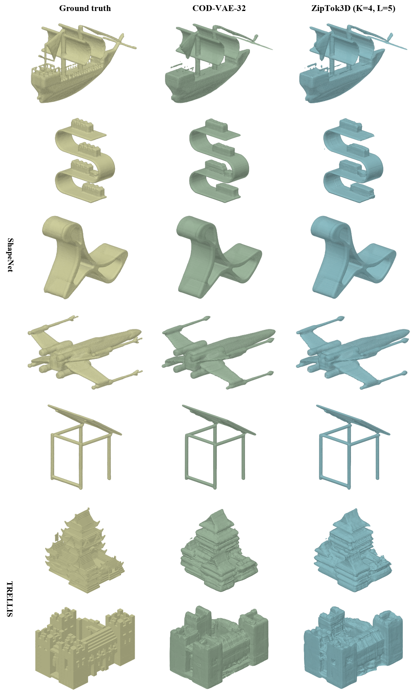

Ground truth
High-fidelity 3D tokenization
ZipTok3D
Compact global-token prefixes, unfolded through parameter-shared iterative decoding.
1token on ShapeNet
4tokens on TRELLIS
5shared refinement passes

01 / Premise
Spend fewer tokens. Let shared computation recover the detail.
Fixed-budget tokenizers ask every token to share the load. ZipTok3D instead learns an ordered family of prefixes: early tokens preserve object-wide geometry, while later tokens add residual detail. A recurrent decoder then turns a short code into a complete triplane without generative completion.
32x
shorter than COD-VAE-32 at the ShapeNet headline point, with matched rounded CD and F1.
02 / Method
An ordered prefix, decoded repeatedly
The encoder maps 2,048 sampled surface points to an ordered latent bank. An exact prefix conditions the learned triplane state: 192 selected tokens are refined repeatedly, while 576 bypassed tokens remain fixed. The restored triplane is queried at Q to produce occupancy predictions.

03 / Operating space
Prefix-length x refinement-depth explorer
04 / Progressive unfolding
One decoder, many shapes
Select a TRELLIS sample to compare the reference, COD-VAE-32, and ZipTok3D-4.
ZipTok3DBridge · K = 4, L = 5
05 / Evidence
Tiny prefixes, competitive surfaces
All ZipTok3D rows use the same selected checkpoint per dataset and five refinement passes. IoU and F1 are percentages; lower CD is better.
| Method | Tokens | IoU higher | CD lower | F1 higher |
|---|
Class-conditioned generation
A physical 2 x 32 causal prefix
ZipTok3D-2 remains close to COD-VAE-32 on distribution metrics while improving latent sampling throughput from 46.02 to 50.62 samples/s.
MMD-CD5.142
COV-CD84.91%
1-NNA-CD54.21%
Full throughput36.64/s
06 / Reconstructions
Reconstructions, side by side
COD-VAE, K = 32
ZipTok3D, K = 4, L = 5

07 / Resources